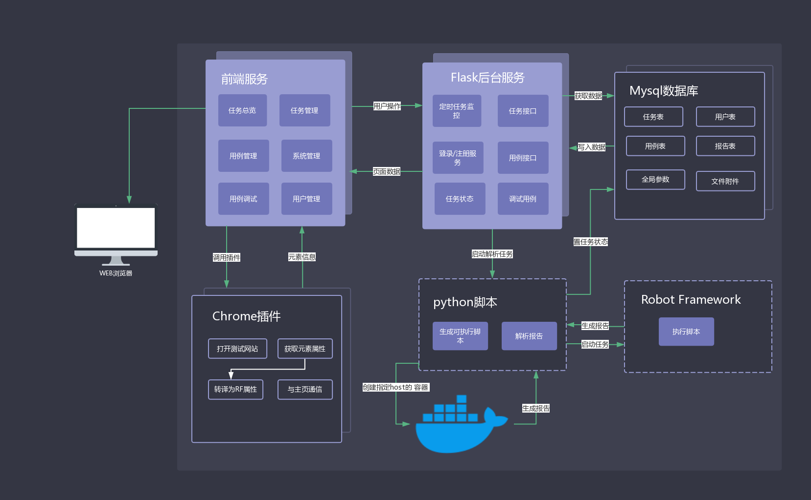
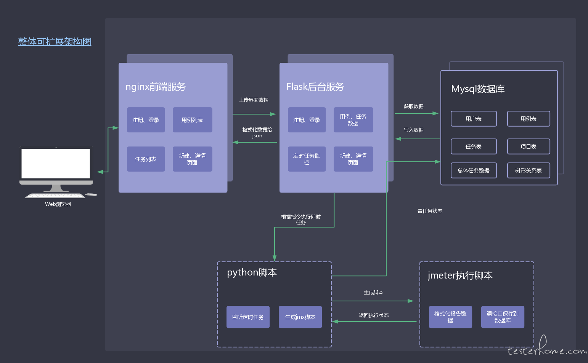

平台简介¶
VFT(Victorinox For Test)是一个及多平台自动化于一体的web版的自动化测试平台。
Web自动化底层通过RobotFramework执行用例，API自动化底层通过Jmeter执行用例。前端通过react js开发，后端通过Flask提供接口服务，数据入库至Mysql。
包含了人员控制，团队协作，版本控制、定时任务等测试相关常用功能。
- Web UI自动化
- API 接口自动化
- APP UI自动化（待开发）
框架结构¶
虽然是一个系统，但其实接口自动化和UI自动化采取的两套独立的框架设计。 Jmeter本身对于接口自动化来说，还可以有更多的扩展。
web ui自动化设计架构¶

api接口自动化设计架构¶

功能模块¶
目前平台集成了原来的IAT，以及新的UI自动化功能，涉及的模块较多。
- 首页信息统计
- Web UI用例管理
- 自动定义关键词管理
- 用例调试
- 元素定位信息快捷获取
- 定位元素截图
- 关键词使用说明
- 全局参数搜索联想
- 关键词自动联想
- 用例版本分支控制
- 即时调试任务
- 每日定时任务
- 指定全局参数类型（同一个变量，不同的环境下值不同）
- 指定任务浏览器
- 指定任务执行代理（可自定义配置）
- 用例按顺序执行
- 项目管理
- 分支版本管理
- 关键词描述信息管理（用于自定义翻译）
- 用户管理（登录、注册、权限管理、冻结）
- 登录界面背景图动态爬取（每次启动服务端时爬取，随机返回）
- 接口用例分目录管理
- 用例请求自定义
- 前置、后置Beanshell
- 自定义参数类型
- 多类型返回值校验
- 接口全局参数管理
- 返回值参数化提取（正则，json）
- 接口用例调试
- 接口任务代理自定义
- jmx、har包自动导入生成接口用例（部分参数待兼容）
- 接口任务全局域名指定（优先单个用例的指定域名，解决原IAT中多域名的兼容）
- 报告可视化展示
- 指定host执行任务（内网测试）
- 任务报告邮件通知
更新日志¶
v2.0.1¶
- 补充项目文档